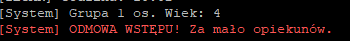
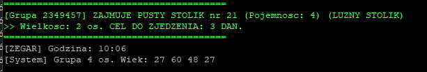
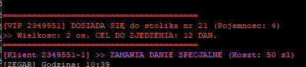
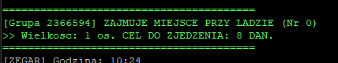
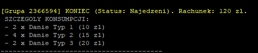
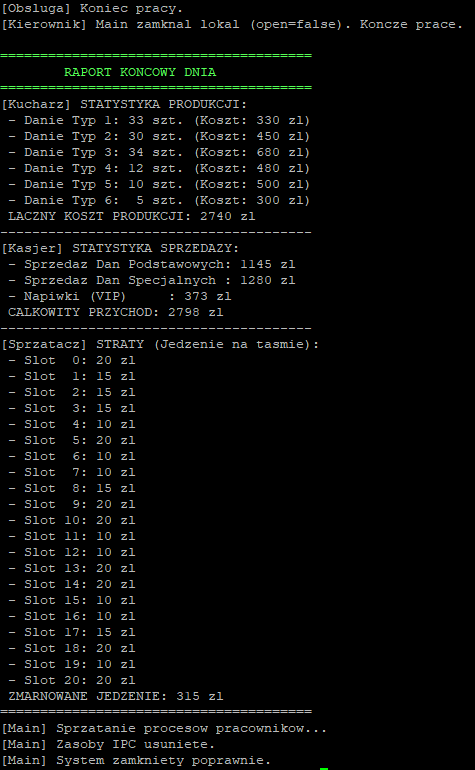

Zaawansowana symulacja restauracji sushi oparta na architekturze wieloprocesowej oraz mechanizmach komunikacji międzyprocesowej (IPC) w systemie Linux.
Wiktor Sasnal
Celem projektu było stworzenie symulacji restauracji typu Kaiten-zushi, kładącej nacisk na synchronizację wielu procesów i wątków. Kod został podzielony na moduły: main (zarządca), klient (logika gości), kucharz, obsługa i kierownik. Zastosowano architekturę hybrydową, gdzie klienci są osobnymi procesami, a członkowie grupy – wątkami.
Projekt wykorzystuje zaawansowane mechanizmy komunikacji międzyprocesowej (System V IPC) oraz synchronizację wątków. Konfiguracja lokalu jest zdefiniowana centralnie w pliku common.h.
Wspólny obszar pamięci przechowuje stan świata dostępny dla wszystkich procesów:
BeltSlot belt[P]: Taśma z posiłkami (dostęp chroniony mutexem).table_capacity / current_occupancy: Tablice monitorujące obłożenie każdego stolika/miejsca.stats_*: Globalne statystyki finansowe (sprzedaż, koszty produkcji, napiwki).open (czy lokal otwarty), emergency_exit (ewakuacja).Link do kodu (implementacja):
System wykorzystuje zestaw 8 semaforów do sterowania dostępem i synchronizacji:
| ID | Rola | Opis działania |
|---|---|---|
| 0 | Mutex Taśmy | Binarny (0/1). Blokuje dostęp do edycji taśmy podczas nakładania/zdejmowania dań. |
| 1 | Sygnał Kucharza | Kucharz oczekuje na tym semaforze (wartość 0). Klient podbija go (+1), by zlecić zamówienie. |
| 2 | Licznik 2-os | Sem. licznikowy dla stolików 2-osobowych. |
| 3 | Licznik 3-os | Sem. licznikowy dla stolików 3-osobowych. |
| 4 | Licznik 4-os | Sem. licznikowy dla stolików 4-osobowych. |
| 5 | Mutex Kasjera | Binarny (0/1). Zapewnia atomowość operacji dodawania utargu do statystyk globalnych. |
| 6 | Licznik Lady | Sem. licznikowy. Liczba wolnych miejsc przy barze (Lada). |
| 7 | Licznik 1-os | Sem. licznikowy dla stolików 1-osobowych. |
Link do kodu (implementacja):
SpecialOrder (PID + cena). Wykorzystana flaga IPC_NOWAIT zapobiega blokowaniu klienta w przypadku przepełnienia kuchni.Link do kodu (implementacja):
./klient.pthread_mutex_t group_lock chroni wspólny rachunek grupy oraz licznik zjedzonych posiłków przed race condition.Link do kodu (implementacja):
Poniżej przedstawiono zestawienie testów weryfikujących kluczowe funkcjonalności systemu. Każdy test opatrzony jest dowodem działania.
[System] ODMOWA WSTĘPU! Za mało opiekunów.exit(0)) i nie zajmuje zasobów.Dowód działania:

DOSIADA SIĘ do stolika nr 16.Dowód działania:


target_to_eat, np. 4 dań).>> Wielkosc: X os. CEL DO ZJEDZENIA: 5 DAN.Najedzeni oraz poprawna kwota rachunku.Dowód działania:


Main poprawnie sumuje przychody ze wszystkich źródeł (sprzedaż standardowa, specjalna, napiwki).Sprzedaż Dań Podstawowych + Sprzedaż Dań Specjalnych + Napiwki = CAŁKOWITY PRZYCHÓD.Dowód działania:

To run this project:
Projekt można skompilować ręcznie przy użyciu poniższych komend:
# Sklonuj repozytorium
git clone https://github.com/wiksas/kaiten-zushi.git
cd kaiten-zushi
# Kompilacja ról systemowych
gcc kucharz.c -o kucharz
gcc obsluga.c -o obsluga
gcc kierownik.c -o kierownik
# Klient wymaga biblioteki pthread
gcc klient.c -o klient -lpthread
# Główny program
gcc main.c -o main
./main.W nowym oknie terminala wyślij odpowiedni sygnał:
| Akcja | Sygnał | Komenda terminala |
|---|---|---|
| Przyspieszenie | SIGUSR1 | kill -USR1 <PID_KIEROWNIKA> |
| Spowolnienie | SIGUSR2 | kill -USR2 <PID_KIEROWNIKA> |
| Ewakuacja / Wyjście | SIGALRM | kill -ALRM <PID_KIEROWNIKA> |